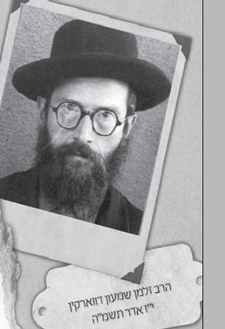

הרב ר’ זלמן שמעון דווארקין ז”ל נולד ברוגאטשוב בשנת תר”ס, לאביו ר’ ירוחם ואמו מרת
חייו ופועלו של הרב הגאון זלמן שמעון דווארקין, מרא דאתרא דשכונת קראון הייטס, מי שהרבי מלך המשיח קרא לו ה’מרא דאתרא שלי’.

ר’ זלמן שמעון היה מספר, כי בחדר החדש גילה הוא את ה’לוקסוס’ שבחיי המשפחות האמידות. בשני ה’חדרים’, היו הילדים שנשארו בהם מהבוקר עד הערב מביאים עמם משהו לאכול. מה הביאו ב’חדר’ של ר’ ירוחם? פרוסת לחם מרוחה בשמן, לחם עם בצל, או סתם לחם בלי כלום. אבל בחדר של ר’ לאזער, היו שהביאו לחם עם חמאה או גבינה. היו גם כאלה שהביאו עמם תפוח. והיו אפילו כאלה שאכלו ‘בולקע’ – לחם לבן באמצע השבוע!
ארוחת ערב בביתו של ר’ זלמן שמעון, היתה לחם, שעימו היתה פורשת להם אימו דג מלוח – חתיכה אחת לכל ילד. זו היתה המנה הראשונה והשניה, הקינוח היה כוס מים קרים. תה וסוכר, היו המנה המיוחדת לשבת.
“הזהרו בבני עניים שמהם תצא תורה” אמרו חז”ל, ואכן, עד מהרה הכיר אביו את תכונותיו וכשרונותיו המעולים של בנו הקטן, והחליט שלתכליתו ויעודו הטוב יכול להגיע רק בלמדו בישיבה. במלאות לו אחת עשרה שנה, בתחלת שנת תער”ב, הביאו אביו לישיבת תומכי תמימים בליובאוויטש. למעשה אביו דיבר על כך עוד שנה קודם, אולם אמו הצליחה לדחות את הנסיעה בשנה.
מכיון שהיה בגיל צעיר שכזה, נכנס בכיתות השיעורים (“חדרים”) של הישיבה. הספקת צורכי תלמידים צעירים אלו היתה מוטלת בעיקרה על תומכים ועוזרים מבחוץ, הורים, קרובים וכדו’. מבלי כל משען ותמיכה כלשהי מן הצד, קיים הרז”ש בילדותו את התנאים שעל ידם נקנית התורה: “פת במלח וכו’”. הנער הצעיר התמסר ללימוד התורה בשקידה והתמדה, ועשה חיל בלימודו.
כאשר למד בכיתתו של הדווינסקער, ר’ יהושע ארש ז”ל, כבש הילד את לבו של הרב, שלא זז מחבבו. כאשר הגיע הילד לגיל מצוות בעת, ערך לו הרב על חשבונו את סעודת הבר מצווה, ואף קנה עבורו תפילין, דבר שעלה הון עתק באותם הימים.
הנער עלה והתעלה במעלות התורה והיראה עד שהתקבל ל’זאל הגדול’ של הישיבה. כבר אז ניכרו בו מעלותיו ומידותיו המיוחדות. למרות כשרונותיו הברוכים, היה הנער צנוע וענו, וכבר אז אמרו עליו כי הוא ‘פנימי’ בעצם מהותו. הנער זכה לקירובים רבים מכ”ק אדמו”ר הרש”ב, ובנו אדמו”ר הריי”צ.
כשלש עשרה שנה למד הנער בישיבת תומכי תמימים, וזכה להיות מעמודי התווך של הישיבה. במיוחד קיבל מר’ שמואל בוריסובער בנגלה ומר’ שמואל גרונעם בחסידות. כמו כן יצר קשרי חברות אמיצים עם כמה מחשובי התמימים, ר’ יהודה עבער הי”ד ור’ אברהם אליהו אקסלרוד. בעת שגלה בית רבינו מליובאוויטש לרוסטוב, היה ר’ זלמן שמעון מהגרעין שנשאר, וסביבו הוקמה הישיבה שנית בקרמנצ’וג ואחר כך ברוסטוב.
לאחר שנאסר הרבי הריי”צ ברוסטוב, נסעו כל תלמידי הישיבה לבתיהם. המאסר, הרב והמחלות המדבקות ששררו ברוסטוב שללו את אפשרות המשך הישיבה ברוסטוב. באותה תקופה הגיע לרוסטוב הר’ בנימין שלמה גנזבורג מהאדיטש, וסיפר לבחורים כי אנ”ש בפולטבה מוכנים לקחת על עצמם את עול החזקת הישיבה.
הת’ זלמן שמעון דבורקין נכנס ליחידות ושאל את הרבי הריי”צ על אפשרות הנסיעה לפולטבה. הרבי שמח מאד על ההצעה, ובפנים מאירות ברכו להצלחה מרובה, והוסיף: כשבאתם לרוסטוב נתכבדתם בחולי, רעב וג.פ.או., יתן ה’ שהנסיעה שלכם תהיה בהצלחה והתחלה טובה לפתיחת הישיבה תומכי תמימים בפולטבה.
הת’ זלמן שמעון דבורקין, יהושע קארף ואליהו וואלאצקי קיבלו אישור נסיעה לזמן מוגבל לפולטבה. כל כך חשוב היה להם לנסוע ולהקים שם את הישיבה, שויתרו על חתונת בת הרבי עם הרש”ג, ועלו על הרכבת לפולטבה. לא קלה היתה הדרך. באמצע הדרך הורדו מהרכבת והעליה חזרה נמנעה מהם בכח האקדח. את שארית הדרך נאלצו ללכת ברגל, עד שהגיעו לפולטבה ביום שישי שלפני שבועות תרפ”א.
בפולטבה שהה הרב דבורקין עד לפני חג הפסח תרפ”ג, אז נסע לביתו ברוגצ’וב לפסח. לאחר חג הפסח הגיע לביתו המכתב המבשר כי הישיבה עברה לחרקוב, והוא נסע מיד לחרקוב. בחרקוב התקיימה הישיבה זמן קצר בלבד, ומשם נסעו התמימים לרוסטוב, שם למדו במשך חורף תרפ”ד.
בסוף החורף נסגרה הישיבה, והרבי עבר לגור בלנינגרד. לשישה בחורים, והרב דבורקין בתוכם, הורה הרבי להישאר ברוסטוב וללמוד את אומנות השחיטה, בה התמחו בבית השחיטה שבויטעבסק. עוד לפני כן הספיק ללמוד ולקבל סמיכה על ההלכות שביורה דעה, אבן העזר וחושן משפט. כמו כן למד מילה, אלא שלא רצה לעסוק בזה.
בשנת תרפ”ו נשא את בת גילו, מרת צביה ע”ה, בת הרב מנחם מענדל דובראווסקי, ששימש בעת ההיא רב בעיר קראלעוועץ. כשנה אחר חתונתו התמנה הרז”ש כרב ושו”ב בעיירה ורונוק שבאוקראינה, ולאחר שנים אחדות העתיק מושבו לעיר סטראדוב וכיהן בה כרב ומורה הוראה. למרות המצב הקשה ורדיפות הסובייטים ימ”ש, השתדל הרז”ש בכל כוחו להרביץ תורה במחתרת וברבים, בשיעורים עם בני תורה ועם אנשים פשוטים, בנגלה ובחסידות. הפרנסה היתה קשה, אך הוא לא נרתע.
בשנים תרצ”ז-ח, הגיעו הרדיפות של הממשלה לשיאם האיום. רבנים וחסידים נעצרו ועונו, רבים מהם נשלחו לארץ גזירה שממנה לא חזרו. המשחית לא פסח גם על רבה של סטראדוב, ומלאכי החבלה הגיעו לביתו. הרבנית הספיקה לרמוז לשכנתה, וזו התחמקה מביתה ומהירה להודיע לרז”ש אודות האורחים הבלתי קרואים. הרז”ש עזב בו ביום את העיר ונסע בדרכים עוקפות, עד שהגיע ללנינגרד. לאחר זמן מה הצליחה הרבנית לצאת מהעיר, והם התיישבו בלנינגרד, שם עסק הרז”ש במלאכת הכריכה לפרנסתו, כשהוא ממשיך להרביץ תורה ברבים.
כאשר פרצה מלחמת העולם השניה, היתה העיר לנינגרד תחת מצור של חיילי גרמניה הארורים. מלבד ההרוגים מההפצצות, גוועו אלפים גם מרעב איום, צמא והקור הנוראי ששרר שם. אפילו המים שבצינורות הבתים קפאו בהעדר אמצעי חימום. הרז”ש התעסק אז באסיפת גופות היהודים שמצא, לפעמים משפחות שלמות, ולקיחתם בעגלות חורף לבית הכנסת הגדול, משם הועברו אחר כך לבית החיים.
כאשר הובקע המצור בפינה אחת, הוציאו מהעיר מחנה גדול של פליטי רעב, וביניהם הרז”ש והרבנית, נפוחים מרעב ועורם צפד על בשרם. מלנינגרד הובאו ברכבות פליטים לדרום רוסיה, שם שבו לאט לאט לאיתנם. אחרי טלטולים ממקום למקום, החליטו לנסוע לסמרקנד, שבה התרכזו בזמן המלחמה רוב מנין ובנין של פליטי אנ”ש. בשנת תש”ג הגיעו לסמרקנד, והרז”ש הסתדר שם כשומר בבית חולים ממלכתי.
בימים אלו התאושש הקיבוץ החב”די בסמרקנד מהרעב והמגיפות, והעסקנים של חב”ד ניגשו מיד להקים שם ישיבת תומכי תמימים שהלכה וגדלה מיום ליום, והורגש הצורך בראש ישיבה. ר’ יונה כהן, מנהלה הראשי של ישיבת תומכי תמימים במדינה ההיא, הגיע אז במיוחד מטשקנט לסמרקנד, ובא לביתו של הרז”ש, והיו שניהם מסובים כל אותו הלילה, עד שלפנות בוקר הגיע ר’ יונה למטרת ביקורו: הוא הצליח לפעול על רז”ש לקבל על עצמו את משרת ראש הישיבה בישיבה החדשה שהוקמה. רז”ש כיהן כראש הישיבה גם אחרי שזו יצאה מרוסיה, והגיעה לפוקינג, ואחר כך לברינוא.
בשנת תש”י, הועמד בראש קבוצות שוחטים, בודקים ומנקרים שנסעו מפריז לאירלנד להכשיר ייצור קופסאות בשר כשר עבור יהודי ארץ הקודש. בי’ שבט תש”י, בשעה ששהה באירלנד, חלם כי הרבנית רבקה (?) ע”ה נגשת בחפזון לארון הקודש, חוטפת ממנו ספר תורה ורצה עמו אל הפתח… כשהתעורר, הרגיש מיד כי משהו נורא קרה בבית חיינו.
בשנת תשי”ג, עזבו בני הזוג דבורקין את צרפת, ובאו לעיר פיטסבורג שבאמריקה, שם התמנה הרז”ש כמגיד שיעור בכיתה העליונה שנוספה אז בישיבת “אחי תמימים”. בפיטסבורג גר כשבע שנים, ובהם נדבקו בו עשרות אברכים מחוגים שונים, עמם קבע שיעורים בנגלה וחסידות.
בתש”כ, נטל הרב דבורקין שוב את מקל הנדודים, והפעם לדירת קבע – קראון הייטס שבברוקלין, שם שימש כרב מורה הוראה, ביחד עם הרב שמואל לויטין והרב אליהו סימפסון. במשך עשרות שנותיו האחרונות, לאחר ששני האחרונים נפטרו, זכה ושימש כמרא דאתרא דליובאוויטש בקראון הייטס.
למעשה, היה הרב דבורקין הרב הראשון שכיהן כרב בשכונה בעידן ה’ופרצת’, עידן שהביא עימו שגשוג ופריחה בלתי מובנים של ליובאוויטש, ויחד עם זאת שאלות רבות למכביר. בכשרות, במקוואות, בענייני משפחה ועוד. הרב דבורקין היה גם רבם של השלוחים הרבים, שמצאו בו את הרב שעמו ניתן לפתור את הבעיות ההלכתיות המטרידות כל שליח, והיו אז חדשות להם. הרב דבורקין, גילה גאונות עצומה ביחד עם יצירתיות הלכתית על מנת לפתור את הבעיות הללו. למשל, תיקן את שטר ההרשאה מרב לרב במכירת חמץ, מכיון שהבחורים והשלוחים לא תמיד היו בקיאים בהלכות מכירת חמץ.
הרבי מלך המשיח רחש לו חיבה עצומה. בכמה ממכתביו מורה הרבי לפנות אליו ולשאול בעצתו, ולשמוע בקול הוראותיו. ברבים אחרים ניתן לראות את היחס והכבוד המיוחד שדורש הרבי שיהיה לרבנים. בכתי”ק נדיר כותב הרבי: “לטלפן ל… בשמי: שיעשה בכל הנ”ל ככל הוראות הרב דווארקין שי’. ומובן שהנני לוקח ע”ע את האחריות בזה – ומפורש בחומש ש”לא תסור ימין ושמאל” – היינו גם לא להחמיר כשהרב אומר שאסור להחמיר. וק”ל. ואצפה שיבשר טוב שעושה כ”ז. ות”ח על ההקדם האפשרי בזה”. את כל השאלות הנוגעות להלכה, היה מפנה הרבי אליו.
בשנת תשל”ו נפטרה אשתו הרבנית, ומאז חי בבדידות. למרות זאת לא הניח את עבודתו בהרבצת התורה והיהדות. הרז”ש נפטר במוצאי שבת קודש, אור לי”ז אדר תשמ”ה, בקביעות כהשנה, ומקום מנוחתו על יד ה’אוהל’ הקדוש. בשכבו על ערש דווי בימיו האחרונים אמר: “איך שהיה ויהיה, אוכל לומר ש”בכל כוחי עבדתי… ביום אכלני… ובלילה…”. הרבי מלך המשיח יצא להלוייתו, ואחרי מספר שעות, כשנסע לאוהל, הלך לראות את קברו.
חיי עוני ומחסור
כאשר הוחלט לשלוח את הילד ללובביץ’, נאלץ ר’ ירוחם לחפש גמ”ח גדול עבור הוצאות הנסיעה. אין הכוונה לשלם על הכרטיס של הילד, שכן ילד בגיל כזה היה נוסע באותם ימים מתחת לספסל לאחר שדחפו מטבע לכרטיסן, אולם לעצמו צריך היה האב לקנות כרטיס הלוך ושובה למחלקה השלישית – וזו הוצאה שאינה פשוטה כלל ועיקר!
גם לאמו היתה עבודה רבה: לתקן ולהטליא כמה בגדים. איכשהו תוקן הבגד העליון, והעיקר: מעיל חורף ישן של ר’ ירוחם הפך להיות מעיל חורף שנועד עבור בחור הישיבה לשנים ארוכות. החישוב היה פשוט: כיון שהילד הולך וגדל, תפרו את המעיל מלכתחילה באורך כזה שיגיע עד עקביו, כך יוכל ללבוש אותו כמה שנים טובות. למעשה, השתמש הילד במעיל לא רק כבגד המגן מהקור, אלא גם כשמיכה, כרית ושמיכת פוך. החסרון היחיד בכלי הרב-שימושי הזה היה שמכיון שהיה כה ארוך, טבע החלק התחתון בבוץ והתקשה כמו קרש…
החיים בחדר בליובאוויטש
כאשר נסע הרב דבורקין כילד ללמוד בישיבה, היתה הישיבה מיועדת בעיקר לבחורים מבוגרים. אולם הנהלת הישיבה לא יכלה לעמוד בפני שטף התלמידים הצעירים יותר, ולכן קבעה שיעור גם לנערים הצעירים מאד. לשיעורים אלו קראו “חדרים”. בגלל הגירעון הגדול בתקציב הישיבה, היה זה בלתי אפשרי לספק לתלמידים אלו החזקה על חשבון הישיבה, וההורים נדרשו לשלם כחמישה רובל לחודש לתלמיד מסוג זה.
לגבי ר’ ירוחם, סכום זה היה למעלה מהפנטזיה הכי רחוקה שלו. למזלו קרוב משפחה מרוגצ’וב קיבל על עצמו לשלוח את הרובלים הללו לישיבה. הודות לכך היה הילך תלמיד מלא ב’תומכי תמימים’. בעד הרובלים הספורים הללו, הוא היה דייר של קבע באחת האכסניות בלובביץ’, שגם סיפקה לו סעודות יומיות תמורת מספר קופיקות, ואפילו כסף לכביסה היה לו. המצב היה משביע רצון באופן כללי.
בעל האכסניה היה בעצמו קבצן שהצליח לפרנס את בני ביתו באותה רמה בה האכיל את הדיירים שלו. לדוגמא: ארוחת בוקר היתה עולה קופיקה וחצי, שהיתה שווה כוס חלב אחת, או פרוסת לחם שחור עם טיפה קוטג’ ורבע כוס חלב. מכיון שהילד העדיף כמובן לאכול גם משהו, היה בעל האכסניה מודד לו רבע כוס חלב מדוייק, כשהוא משתמש בקש אותו היה שובר לגודלה של רבע כוס. ארוחת הערב באכסניה, היתה לפעמים בשרית על פי הלכה… לפחות בלילה היה לו מקום נוח לישון, הודות לכרית והשמיכה של אחותו הגדולה. הילד היה יחסית מאושר.
ימי המנוחה לא ארכו הרבה זמן. הרובלים הגיעו לישיבה חודשים אחדים בלבד. עבר שבוע ועוד שבוע, הילד ממשיך להיות סמוך על חשבון האכסניה ובעל האכסניה מצפה בכליון עיניים לתשלום שלא הגיע. החוב גדל ובעלת הבית החליטה כי אי אפשר כך להמשיך.
קראה בעלת הבית לילד, ובאכזבה מהולה בצער נתנה לו להבין כי הם היו שמחים שישאר בצל קורתם, אולם בכל לובביץ’ יודעים על מצבה הקשה של האכסניה שלהם, ומאחר שהפסיקו לשלוח להם כסף מהישיבה, אין באפשרותם לאפשר לו להמשיך ולגור אצלם. אבל מכיון שחייבים להם כבר הרבה כסף, עליו להשאיר אצלם את השמיכה והכרית כמשכון!
הנער השקט והעדין הנהן בראשו בעצב, אסף שק קטן ממה שנותר מ”רכושו” (מעט הבגדים המטולאים, שק התבן וכדומה) ויצא עם החבילה אל הזאל הגדול של הישיבה. נסיעה בחזרה הביתה לא עלתה על דעתו. לא היה לו לא כסף ולא חשק לכך. תומכי תמימים היתה הבית שלו.
למעשה, לא היה הוא הילד היחיד במצב הזה. היתה קבוצה שלמה של תלמידי “חדר” שבצורות שונות ‘החליקו’ אל תוך הישיבה. במשך הזמן בו שהו בחדר אזלו ההכנסות, ואיכשהו היו צריכים לסדר אותם בישיבה או בעיירה העניה.
במאמץ רב השיג הילד ‘ימים’. בתחילה שני ימים בשבוע, ואחר כך שלושה וחצי ימים בשבוע. בשבתות אכלו הילדים אצל הרבנית רבקה, שדאגה להם כאמא. גם הרבנית שטערנא שרה ואגודת הנשים שלה היו מספקות לילדים מיני מזונות וכמו כן מרק בשעות הצהריים.
מכיון שעדיין היה חסר לילד כמה ימים בשביל להגיע למחזור תזונה שבועי מלא (כלומר: מינימלי), לא היו לו ברירות והוא נאלץ להשתמש באופנים צדדיים. הוא ניגש לאחד התלמידים מבני המשפחות הנגידות, הת’ משה גורארי’, וביקש ממנו ללכת עימו לאכסניה שלו. הנ”ל השיב לו כי הוא כבר מלא… הוא לוקח עימו לאכסניה יותר מדי ילדים. אולם במקום זאת, יש לו מעט דמי כיס, והוא יביא לו דמי אוכל אחת לשבוע…
שושבינא דמלכא ושושבינא דמטרוניתא
בשנת תשמ”א, זכה הרב דבורקין לשני התפקידים הנ”ל. היה זה כאשר שלחו הרבי מלך המשיח שלח אותו כנציגו האישי לסיומו של התורה המיוחד של ילדי ישראל בארץ הקודש, שם התקבל הרב דבורקין בכבוד וההערצה הראויה לנציגו של הרבי.
באותה שנה, היה זה בערב פסח שחל בשבת, בשעה שתים עשרה קודם זמן שריפת חמץ, היה ברובו בבתיהם. לפתע ירדה הידיעה המרעישה אל הזאל הגדול – “פארביינגען!” התברר כי הרבי הודיע על כך למזכיר עוד קודם לכן, אולם אמר לו שלא יפרסם זאת.
ב-770 כמעט ולא היו אנשים. ההתוועדות היתה ‘מוזרה’ מעט. יין לא הובא, על פי הוראת הרבי. חמץ לא ניתן כבר לאכול וגם לא מצה. על שולחנו של הרבי עמדה צלחת עם מספר בננות, וכן קנקן מים. בזאת הסתכם ה’כיבוד’ להתוועדות.
לאחר השיחה הראשונה, אמר הרבי, שבתחילה עלה בדעתו להורות להביא יין גם להתועדות זו, אולם אדמו”ר הזקן פוסק בשולחן ערוך שאין לשתות יין לאחר השעה העשירית. על כן רצה שיובאו פירות, אולם בטחונו בה’ שיהיו פירות רבים פעל רק ברוחניות ואילו בגשמיות אין פירות עבור כולם. אולם לאידך, אין זו דרך ארץ שהוא לבדו אוכל ושותה, וכל הקהל יושב ומתענה..
על כן, מאחר שעבור כל הקהל לא יספיקו הפירות שבצלחתו, אפילו אם יפוררו אותם לפירורים, יתן איפוא מהפירות ל”מרא דאתרא”, וכדאי שהוא יצרף אליו את בית הדין, וכך תחשב אכילתם ושתייתם כאילו אכל ושתה כל הקהל…
הרבי הפריש מצלחתו כמה פרוסות בננה ואת הצלחת עם כל אשר עליה, וכן את קנקן המים, נתן ל”מרא דאתרא”…
היו עוד אירועים בהם ייצג הרב את אחד משני הצדדים. כאשר נכתב התניא לזכות תושבי קראון הייטס, היה הוא זה שנכנס אל הקודש פנימה למסור את הספר. וכאשר הורה הרבי בי’ שבט תשל”ו כי הרבנים יפסקו שארץ ישראל שייכת לעם ישראל, אחרי כמה רבנים שפסקו כך, הורה הרבי גם לרב דבורקין שיפסוק כך.
המיימינים הצליחו לשבוע
שבוע ימים קודם פטירתו של הרז”ש, ביקר אותו בבית הרפואה אחיינו. בעת שהיה נים ולא נים, כשמחלתו גברה ודיכאה את רוחו וגופו, התעורר לפתע הרז”ש ואמר: “היו מיימינים ומשמאילים. המשמאילים לא נתנו כל זמן, אמנם המיימינים נתנו עוד שבע ימים, והם נצחו”. האחיין נבהל, בחשבו שהמחלה פגעה במוחו של הדוד. דבריו הובנו שבוע ימים אחר כך, כאשר נפטר הדוד…